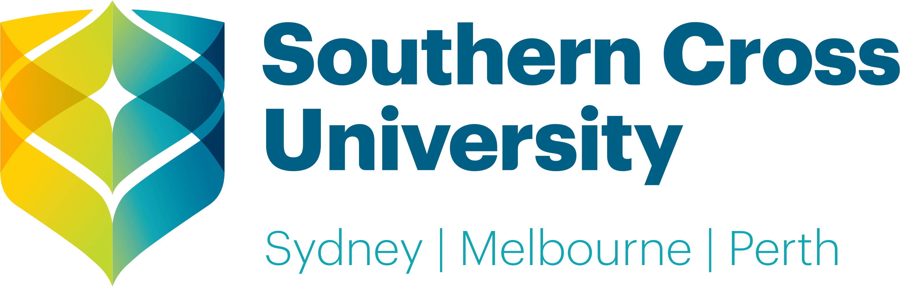
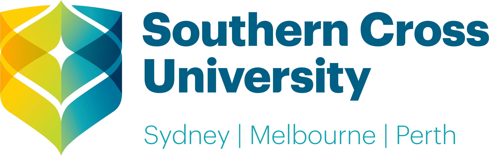

Web design encompasses many different skills and disciplines in the production and maintenance of websites. The different areas of web design include web graphic design; interface design; authoring, including standardised code and proprietary software; user experience design; and search engine optimization.
Graphic design is the process of visual communication and problem-solving through the use of typography, photography, and illustration. Graphic designers create and combine symbols, images and text to form visual representations of ideas and messages.
Good content is a true salesman for your business. Having well-structured, well-written and impressive content for your business is one of the best business promotions you can make.
 

Contact us:
Telephone:711-234302
Email:info@islington.edu.np
My Portfolia-
Designed By Prashanna GC ©